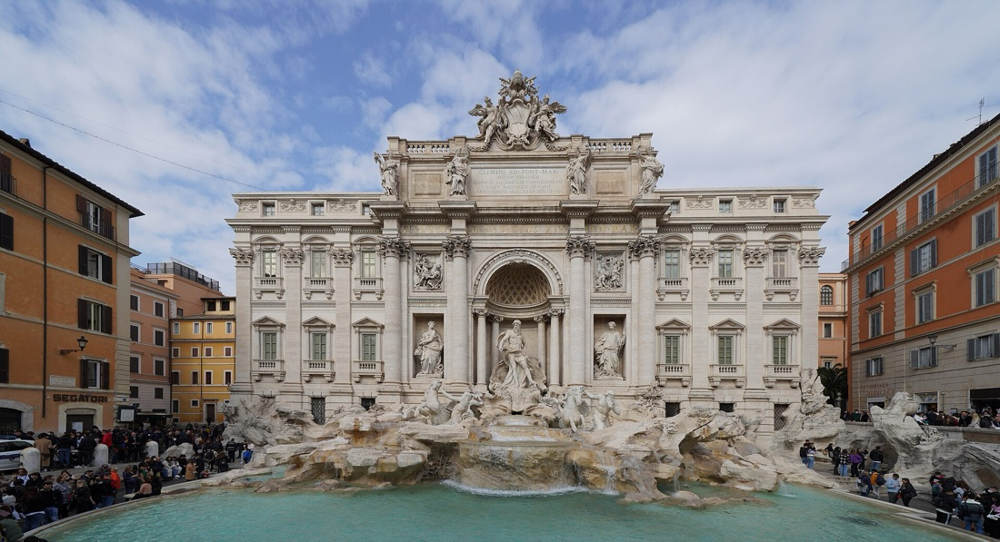

Book the two big ones
Timed tickets for the Colosseum, Forum and Palatine, and for the Vatican Museums, sell out. Use the official sites — colosseo.it and museivaticani.va — and carry the ID the booking was made under.
A first visit
Every moment in the chronicle, arranged two ways: seven ages, oldest first, or nine neighbourhood walks. The stops are the same; only the grouping and order change.

Timed tickets for the Colosseum, Forum and Palatine, and for the Vatican Museums, sell out. Use the official sites — colosseo.it and museivaticani.va — and carry the ID the booking was made under.
Covered shoulders and knees, quiet voices, no flash. Several churches close for a few hours at midday, and a few close without notice for services.
The nasoni fountains run drinkable water; carry a bottle. The centre is cobbled and the days add up, so wear shoes you have already walked in.
Opening days and access change with conservation work and the season. Practical details on this page are as of 2026; check the official site the day before rather than trusting any guide, this one included.
About the distances. Each leg is the straight-line distance between two stops multiplied by 1.3 for streets, then rounded; totals are the sum of the legs. They exclude time inside sites and underestimate real walking, so treat them as a floor. The historic centre is small — Colosseum to Pantheon is about 2 km, Pantheon to St Peter’s about 2 km — but the age chapters cross the whole city and need the metro.